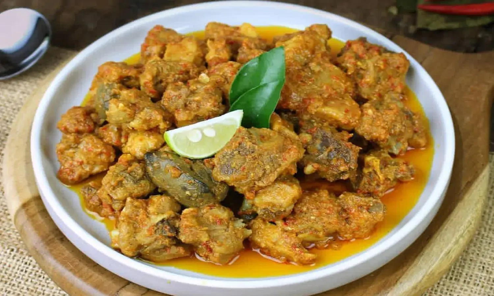

Resep Ayam Palekko

Nasu palekko adalah hidangan tradisional yang menggabungkan ikan dengan bumbu khas Sulawesi Selatan, menghasilkan cita rasa yang kaya dan menggugah selera.
Bahan-Bahan
Bahan utama
Bumbu
- 6 siung bawang merah
- 5 siung bawang putih
- 8 buah cabe rawit merah
- 5 buah cabe merah
- 3 lembar daun jeruk
- 1 buah tomat
- 3 Serai
- 1 jempol lengkuas
- 1 jempol jahe
- Air asam
- 1 sdt lada bubuk
- 1 sdt kunyit bubuk
- Garam sesuai selera
- Gula merah sesuai selera
- 3 sdm minyak goreng
- Penyedap rasa royco
Cara Membuat :
- Ayam setelah di potong kecil - kecil lalu di rendam dengan air asam selama 15 menit
- Haluskan bumbu - bumbunya, bawang merah, bawang putih, tomat, cabe, jahe. Untuk menghaluskan bisa di ulek atau di blender.
- Untuk serei dan lengkuas cukup di geprek/ di memarkan
- Setelah semua siap, panaskan 3 sdm minyak goreng untuk menumis bumbu
- Tumis bumbu halus bersamaan dengan serei lengkuas yg sudah di memarkan, masukkan juga 3 lembar daun jeruk
- Setelah bumbu yang di tumis harum, masukkan ayam nya dan tambah kan air sampai ayam nya terendam.
- Masak ayam nya sampai kuah nya surut, supaya bumbu benar-benar meresap. Koreksi rasa dengan tambahkan garam & gula merah sesuai seleramu. Supaya ayam cepat empuk, kamu bisa menutup nya dengan tutup panci selama 10 menit lalu di buka lagi
- Kecilkan api, Tetap aduk2 setelah kuah nya surut dan bumbu meresap
- Setelah matang, sajikan dengan cinta supaya ayam lebih istimewa